Lesson 1
Motherboard
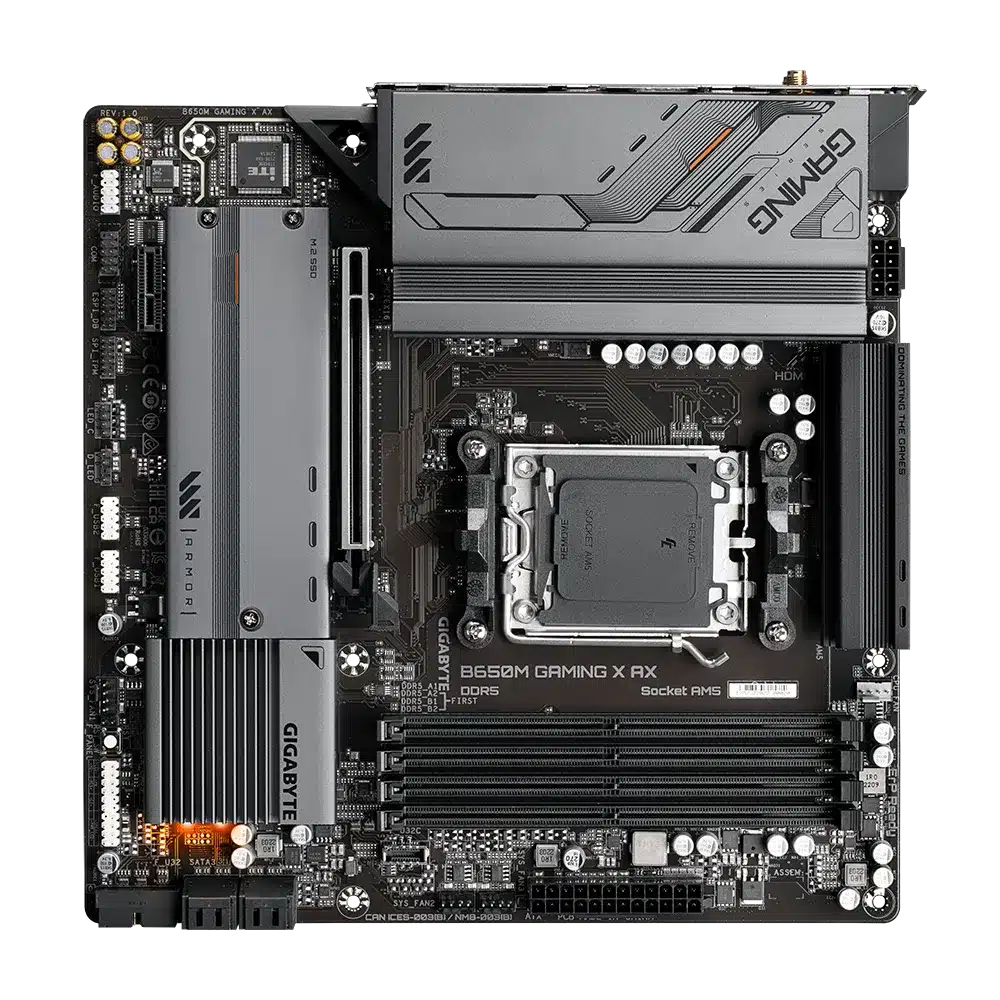A motherboard (also called mainboard, main circuit board, system board, baseboard, planar board, logic board, and mobo) is the main printed circuit board (PCB) in general-purpose computers and other expandable systems.
CD-IN
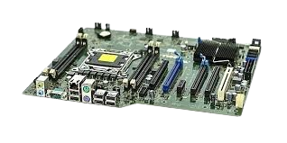is a four-pin, black connector on Sound card or motherboard. It is Optical Drive Audio is another name for it. connector. It's employed to Attach the wire with four (4) pins from CD/DVD ROM to the four (4) CD-IN pin connection turned on Motherboard/MOBO. A compact disc is a portable storage medium that can record, store and play back audio, video and other data in digital form. Techtarget
PCI

>The term "peripheral component" is used. Connect and utilize for attachment hardware elements on motherboard. Intel was the first to PCI was first introduced in 1992. It has 64-bit and 32-bit versions that the 133 MBps speed. The majority of Devices that are compatible with PCI slots were LAN (Ethernet) and sound card card, video card, and extension for the USB port and so forth. The Peripheral Component Interconnect standard (PCI), created by Intel Corporation, is a high-speed bus that is common in almost all desktop computers. Dell
CMOS
(Complementary Oxide and Metal Semiconductor), which we also call Real- NVRAM and the Time Clock (RTC). It is run on a lithium battery at a voltage of 3 volts. Additionally, it keeps computer data. such the date and time of the system and configuration of the system hardware.
IEEE
(Electronics and Electrical Institute) 1394 Header is a standard for engineers. serial bus interface. Know us as well FireWire and i.LINK. Able to do high- Real-time and fast communications data exchange. Quicker than USB 2.0 with the rate of about 1 Gbps. Header 1394 looks like a USB header; take caution not to put a USB header cable into it or the other way around. Conversely. Your motherboard can get damaged. Consult the motherboard's manual at all times
USB HEADER
The header has nine (9) pins. It permits extra USB port on your the front/drive bay of the machine. There is already a USB incorporated into the motherboard. ports on the integrated I/O peripherals, but more could be added. at the USB-connected front bay header or headers.
SCREW HOLE OR MOUNTING HOLE
The Motherboard Case is located there. Standoff/Standouts is appropriate. To be attached motherboard inside the computer casing or chassis. The majority of motherboards have seven screw hole, however that's not the case at all. There should be a lot of standoffs. It's a On a case-by-case basis, only include noteworthy in the screwhole that matches the chassis screw hole.
SYSTEM PANEL CONNECTOR
also referred to as the Front Panel header Particularly, the panel and panel header are intended for system panel cable connections. To manipulate or create a power button, and reset button, Power LED, and HDD LED function. Be aware that colored cables for the system panel are wire that is powered or positive, but black or The ground or negative wires are white. cables. The cables, wire colors, and connection could differ from one another. chassis and motherboard brands, thus always Consult the handbook
SATA 1
This SATA interface is the original model with the 1.5 Gbps speed. Officially, it is known as as 1.5 Gbps SATA. Its bandwidth a maximum throughput of 150 Mbps. This is the replacement for an IDE or P/ATA connector computer bus interface that links mass storage devices including solid-state drives, optical drives, and hard disk drives to host bus adapters. Wikipedia
SATA 2
SATA 2.0, the second-generation SATA interface, operates at 3.0 Gbps with a maximum bandwidth of 300 MB/s. It is often located on the side of the motherboard and is backward-compatible with SATA 1 ports..
ATA (AT ATTCHMENT)
>Another name for it is PATA (Parallel ATA). It is was once the IDE's standard interface. compatible hard disks, but has since been swapped out through SATA
IDE (INTEGRATED DRIVE)
A flat ribbon cable with several connectors that connect to the motherboard and storage devices is how the IDE operates.
MOTHERBOARD CAPACITORS
Are tiny parts of the motherboard that aids in conditioning power on others parts of the motherboard. A capacitor can additionally hold electronic charge, so it is best to avoid touching one if the The computer has just shut down. To make available the electronic charge of the capacitor, push the the computer's power button when it's Unplug. Bulge capacitors could result in many motherboard issues.
NORTHBRIDGE
Also referred to as PAC or NB, it regulates the flow of exchanges between RAM, PCIe, and processor or Memory stick. The North Bridge is a bridge that controls communication between the motherboard's components and the CPU. The North Bridge chip, which is the only motherboard circuit other than the CPU that typically operates at full processor bus speed (Front side bus), is essentially the motherboard's principal component after the CPU Geeksforgeeks.
SOUTHBRIDGE
is an IC on the motherboard that accepts take care of every I/O controller, combined hardware and hard drive manager. Combined Sound is one example of a peripheral. card, video card, and USB ports, BIOS, SATA, IDE, Firewire, the Internet, and so forth.
MEMORY SLOT
sometimes referred to as a RAM slot or The memory socket is where the Memory sticks, or RAM, are put in. Typical Previously, the motherboard had two memory slots, although they're high final motherboards could have more.
SOCKET NAME
is additional crucial information to Examine the motherboard. This is to Verify that the processor is in line with the motherboard. The picture up top is an example of AMD. AM3 socket. AMD has sockets as well. AM3+, AM2, FM1, socket FM2, The most recent are AM2+ and AM4. Intel LGA 775 and LGA 1156 were formerly LGA 1150, LGA 1151, and LGA 1366 LGA 1155.
CPU SOCKET
It is the location of the CPU, or processor. It fits into the Central Processing Unit. The processor ought should work with The socket on the motherboard name that was previously mentioned. CPU sockets that correspond to the particular CPUs on each server are installed. One socket or more sockets for tasks like parallel or heterogeneous computing may be present, depending on the type of server. Gigabyte
MOTHERBOARD MODEL NAME AND NUMBER
If motherboard drivers are missing, search the model number (e.g., UD4P drivers for GA-MA790XT) on the manufacturer's website or a search engine to find the correct drivers. For more guidance, refer to the ASUS YouTube video on verifying the motherboard model name.
JUMPER
are employed to stop or permit the flow of current. into specific areas of the board. It also made use of to set up hardware parts like the CD ROM, BIOS, and hard disk, Sound card, modem, DVD ROM, and etc. It was used to make adjustments on IDE days. cable, slave drive, and master drive choose by shifting the jumper from two pins apiece.
F AUDIO CONNECTOR
is employed to link front audio. connectors through the casing. This is a continuation of integrated I/O audio connectors
I/O INPUT OUTPUT
An example of these is the Integrated Peripherals. The motherboard's integrated external link. The Mouse is located there. USB cord, keyboard, and monitor, SPDIF, audio jacks, firewire, and Additional external devices must be linked..
Content for Lesson 2
ECS H110M1-C2H
H110M4-C2H supports Intel Core I7, Core I5, Core I3, Pentium Dual Core and Pentium Celeron Socket 1151 processors
CPU FAN
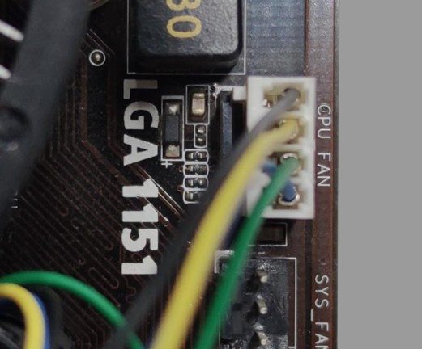A computer fan is any fan inside, or attached to, a computer case used for active cooling. Fans are used to draw cooler air into the case from the outside, expel warm air from inside and move air across a heatsink to cool a particular component. Both axial and sometimes centrifugal (blower/squirrel-cage) fans are used in computers. Computer fans commonly come in standard sizes, such as 92 mm, 120 mm (most common), 140 mm, and even 200–220 mm. Computer fans are powered and controlled using 3-pin or 4-pin fan connectors.
POWER SUPPLY UNIT
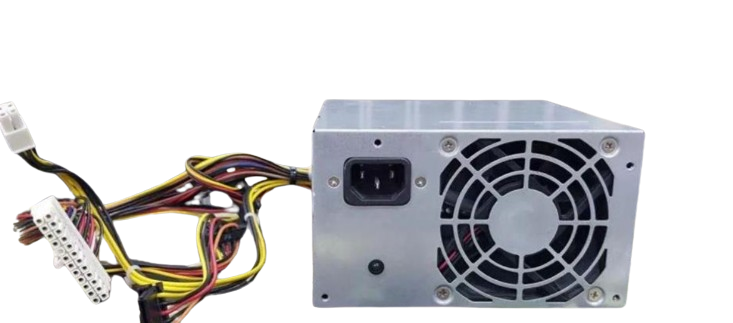A power supply unit (PSU) converts alternating current (AC) electricity from a wall outlet into direct current (DC) electricity for a computer's internal components. It provides the power needed to run the computer's motherboard, CPU, GPU, drives, and other peripherals.
12V CONNECTOR
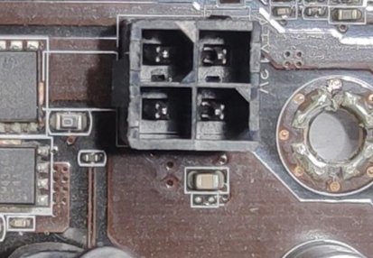A 12V connector is a type of electrical connector that delivers 12 volts of power to a device. 12V connectors can be used in computers, fans, and trailers.
PSU CONNECTOR
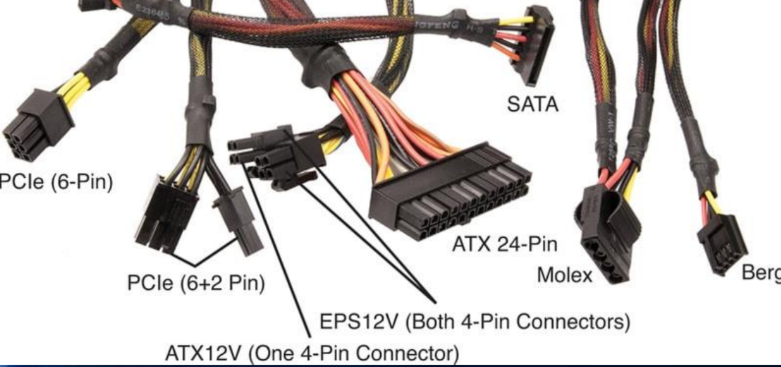The connectors on a power supply unit (PSU) provide power to the computer's internal components. The main connector is the ATX 24-pin connector, which supplies power to the motherboard. Other connectors include the 4-pin Molex connector for hard drives and the SATA connector for SATA drives.
24 PINStitle
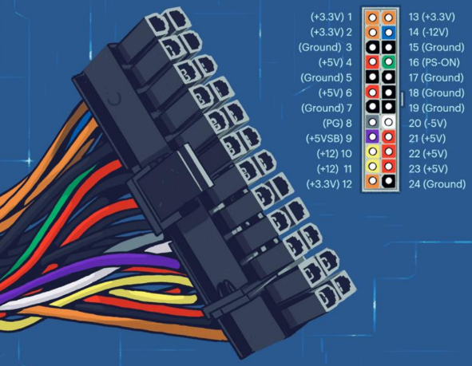The 24-pin connector, also known as the ATX 24-pin connector, supplies power to a computer's motherboard. It connects the power supply unit (PSU) to the motherboard, distributing power to all of the motherboard's components.
SATA POWER CONNECTOR
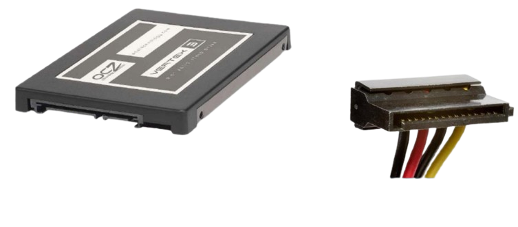A SATA power connector supplies electrical power to storage devices like hard disk drives (HDDs) and solid-state drives (SSDs). SATA stands for Serial Advanced Technology Attachment.
SATA DATA CONNECTOR
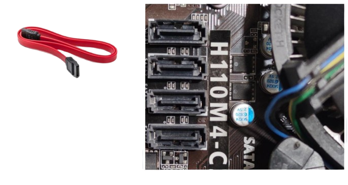A SATA (Serial Advanced Technology Attachment) connector allows storage devices to communicate with a computer's motherboard. SATA connectors transmit data and power between the storage device and the computer
8PIN/6PIN CONNECTOR
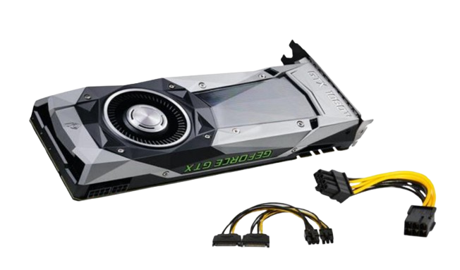6-pin and 8-pin connectors are power connectors that provide power to graphics cards and CPUs. The 8-pin connector can provide more power and support more powerful components.
MOLEX
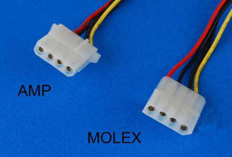Certain Molex connectors are used for providing power to the motherboard, fans, floppy disk drive, CD/DVD drive, video card, some older hard drive models, and more
FRONT PANEL
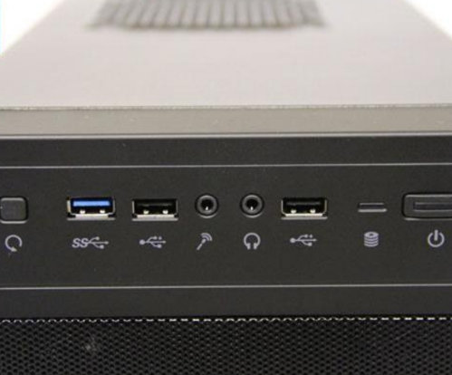The front panel of a computer is the part that the user interacts with, while the back panel is the part where you connect external devices
USB 3 FRONT PANEL
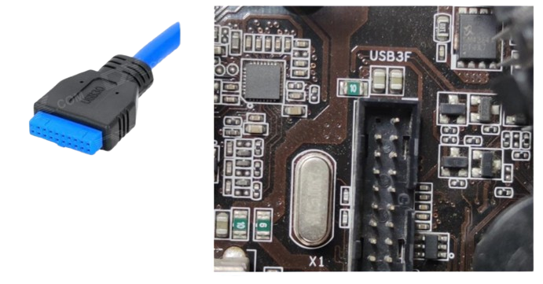A USB 3 front panel is a connection port on a computer case that allows you to connect USB 3 devices to your computer's motherboard
AUDIO FRONT PANEL
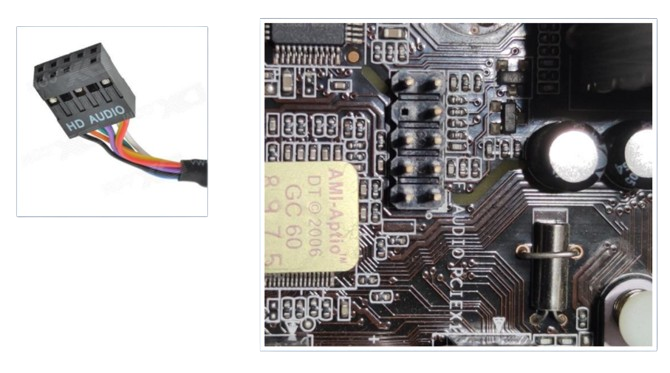allow you to connect the power button, reset button, LED indicators, USB ports, and audio jacks on your case to the motherboard.
USB
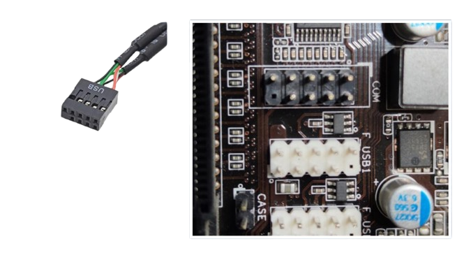
A set of USB ports on the front of a computer case that connect to the computer's motherboard.
FRONT PANEL CONNECTOR
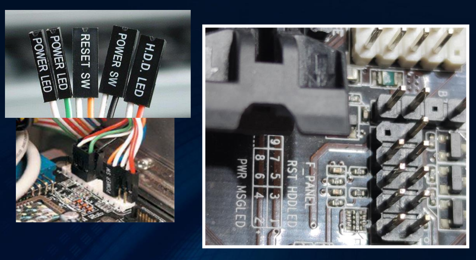Front panel connectors connect the motherboard to your CPU case.
CMOS RESET
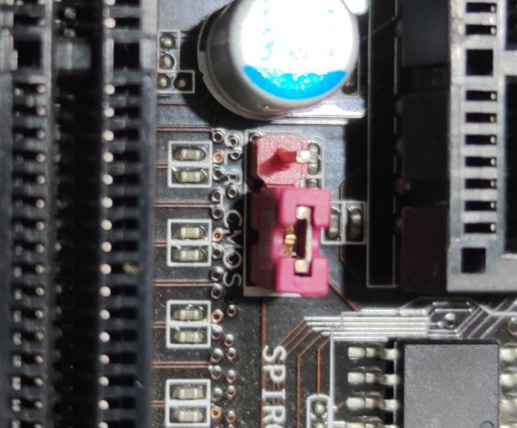Resetting the BIOS or CMOS settings can clear any corrupted or incorrect configuration that may cause boot errors, compatibility problems, or instability.
Understanding CPU
INTEL AND AMD
INTEL AND AMD

oth are multinational companies making processors and other computer equipment. Intel is generally considered the market leader in overall performance, while AMD specializes in power efficiency and budget friendliness..
INTEL
Intel is a well-known processor maker used in computers by many manufacturers, including Apple, Dell, HP, and Samsung. Intel processors are also stable and well-rounded in their performance. The i3, i5, and i7 are the entry, middle, and high-level hardware of Intel.
INTEL CORE
Intel Core processors are a family of central processing units (CPUs) designed for personal computers and. Less expensive than AMD offering excellent performance, multi-tasking capabilities, and support for demanding activities like video editing, gaming, and software development. Higher-numbered processors offer greater processing power. and Less efficient than AMD Can heat up when used with Clock Speed Boost(14 nm) The maximum turbo frequency of an Intel Core i7 processor varies by model, but can range from 4.7 GHz to 5.6 GHz
AMD
AMD Processors are power efficient, which makes them great for games. The processor brands include Athlon branded by AMD; Phenom; and Ryzen 5, Ryzen 7, or Ryzen9 Most of the computers manufactured by computer manufacturers except Apple use processors from AMD. The choice between them is dependent on your requirement, budget, and intended application
AMD OR RYZEN
The AMD Ryzen 7 9800X3D is a high-performance gaming processor featuring 96MB of L3 cache due to its advanced 3D V-Cache technology. It offers a notable performance increase over the 7800X3D, particularly at 1080p resolution with lower settings. With 8 cores, 16 threads, and clock speeds of 4.7 GHz base and 5.2 GHz boost, it excels in gaming and multitasking. It is regarded as the ideal gaming CPU currently available, although processors with more cores may be better for demanding professional tasks. Its AM5 socket also allows for future upgrades, making it a solid investment for serious gamers.
ASSEMBLE/DIASSEMLBE
Lesson 4: Additional Components

Content about additional components...